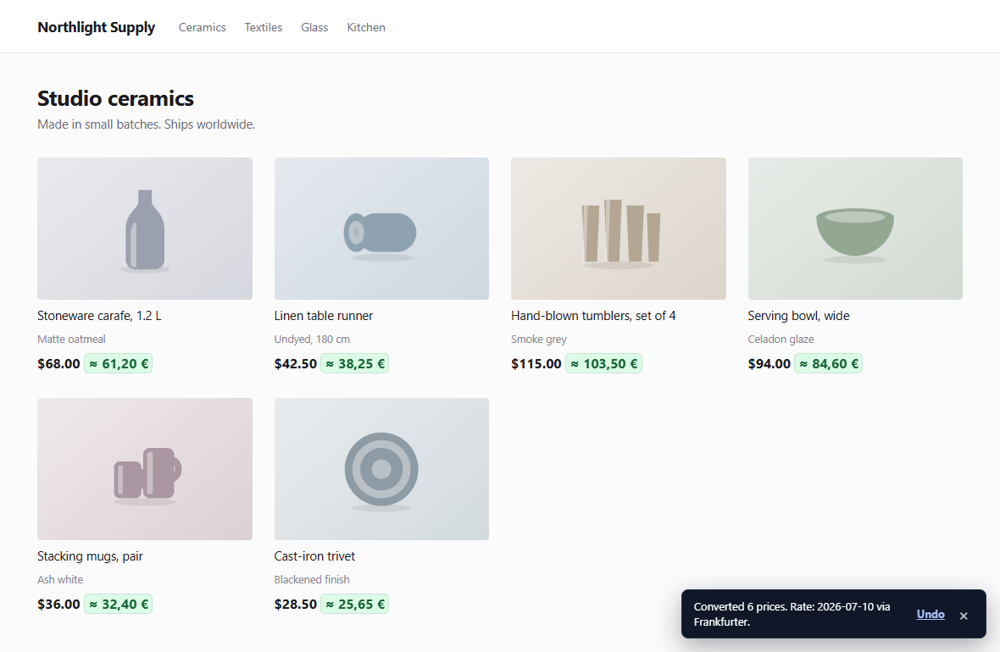
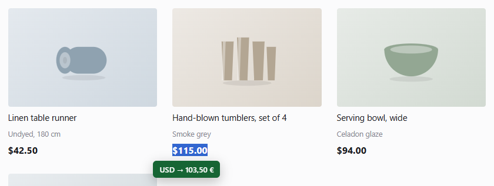

THE TWINPRICE USER GUIDE
How to convert website prices in Chrome and Firefox
Twinprice is a free browser extension that converts prices on shopping pages into your preferred currency. Install it, choose your currencies, and select Convert page prices. For just one price, highlight it with its currency and click Convert selection.
Updated
1. Install Twinprice in your browser
Open the Twinprice Chrome Web Store listing or the Twinprice Firefox Add-ons listing and follow your browser’s installation steps. There is no Twinprice account to create.
Open an ordinary shopping webpage. Use your browser’s extensions menu to open Twinprice; pin it to the toolbar if you want quicker access. Webpage access lets the extension find supported prices and display conversions. Read the privacy policy for how permissions and exchange-rate requests work.
2. Convert prices across a shopping page
- Open Twinprice from your browser toolbar.
- Under FROM, leave AUTO selected to detect the source currency, or choose it yourself. If a symbol is ambiguous, select the correct currency manually.
- Under TO, choose the currency you want to see. Search by currency name or code, such as EUR or USD.
- Click Convert page prices. If the converter is disabled, the action may read Turn on and convert page.
You can also use Convert prices in the on-page prompt when Twinprice finds a supported price. With the side-by-side display, the original amount stays visible beside its conversion.

3. Convert a single highlighted price
Set your target currency in the Twinprice popup first. Then highlight a price on a webpage, including the currency symbol or code—for example, USD 115.00. Click the blue Convert selection button beneath the highlight. The result appears in a green bubble.
You can also right-click the selected text and choose Convert selected currency. Selection conversion is useful when you only need one amount without converting the rest of the page.

4. Remember settings for a favorite shop
Open Page options in the popup and turn on Convert this site automatically. Twinprice remembers automatic conversion for that site, including your manual source currency or AUTO choice.
In the popup’s appearance controls, you can choose converted-price colors and shape. You can also display converted prices beside the originals or in their place.
5. Restore prices or switch conversion off
After converting a page, open the popup and select Restore original prices to undo its conversions. To stop automatic conversion on that shop, turn off Convert this site automatically under Page options.
To stop price scanning, prompts, and automatic conversion everywhere, turn off Enable converter.
Practical examples for shopping abroad
These examples show how to choose currencies and interpret a conversion. All rates below are invented for illustration; the extension uses the rate available from its provider.
How do I see a euro price in Polish złoty?
For a shop charging euros, choose FROM: EUR and TO: PLN, then click Convert page prices. If a lamp costs €89 and the example rate is 4.30 PLN per EUR, its converted price is 382.70 PLN (89 × 4.30). Keep the original visible to compare the shop’s amount with the estimate in your home currency.
To convert just that lamp’s price, set PLN as your target currency, highlight the price including € or EUR, and click Convert selection.
Does a dollar sign always mean US dollars?
No. USD, CAD, AUD and other currencies use a dollar sign. Confirm the currency in the shop’s currency selector or payment information. For a Canadian-dollar listing, choose FROM: CAD, even if the displayed price is simply $100. Choosing USD would use a different currency pair.
AUTO uses the page’s currency context. If the result is unclear, choose the source manually. When a shop lets you change its displayed currency, match Twinprice’s source to the currency currently shown on the page.
Why is the amount charged different from Twinprice’s conversion?
Twinprice estimates a price for comparison using a reference exchange rate. It does not change the shop’s price or set the rate used by your bank, card provider, or payment service. Shipping, taxes, conversion margins, and other fees can change the final total.
For example, at an invented rate of 0.90 EUR per USD, a USD 100 item is EUR 90. A hypothetical 3% conversion fee on that amount would add EUR 2.70, making EUR 92.70 before any other charges. Twinprice’s price conversion does not calculate that fee. Check the shop’s final total and your payment provider’s terms for the amount you will pay.
How can I compare prices from two shops?
Use the same target currency on both sites, but choose the correct source currency for each shop. Convert the product prices, then compare the final totals including shipping and taxes. An item with a lower converted price can still cost more overall.
If you only want to compare amounts you already know, open Convert custom amount in the popup and type an amount. Choose an explicit source currency first if AUTO has not identified one.
Can I convert prices without a fresh internet connection?
Recent cached rates can support a conversion when a fresh rate is unavailable. This depends on having a usable cached rate for the requested currencies; Twinprice is not guaranteed to work fully offline. It warns when cached rates pass 48 hours and will not use rates older than seven days.
See where the rates come from and the product’s browser and currency limitations.
If a price will not convert
- AUTO cannot identify the currency
- A symbol such as $ can refer to several currencies. Choose the shop’s currency under FROM and try again. For a selected price, include the currency code when it appears in the page text.
- Nothing happens on a browser settings page or extension store
- Browsers restrict extension access to those pages. Try an ordinary shopping webpage and check that Twinprice is enabled and has access to that site.
- Some prices remain unchanged
- Twinprice works with supported webpage text. Prices inside images, inaccessible frames, or unusual layouts may not be detected. Try selecting a text price or typing the amount in the popup.
- A currency pair or fresh rate is unavailable
- Available pairs depend on the exchange-rate provider. Check your connection and currency choices, then retry. Twinprice can use recent cached rates; it warns after 48 hours and will not use rates older than seven days.
- The checkout total differs from the conversion
- Twinprice uses Frankfurter reference rates to help compare prices. A bank, card provider, or payment service can apply a different rate and add fees. The converted amount does not change what the shop charges.
Still stuck? Report an issue on GitHub with your browser, Twinprice version, and a reproducible example. Avoid including personal checkout or payment details.